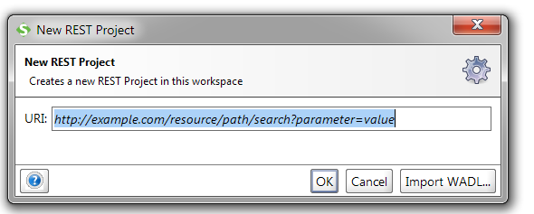

Health Enrollment Lab Exercise Part 3
- Java
- C#
- .Net
Create Integration Tests with SOAPUI
Prerequisite Software
- JDK 1.8
- Eclipse 4.6 or newer
- MySQL 5.7 or newer
- Tomcat 8.5
- SourceTree 1.9
- Chrome browser
Before you begin part 3 of the lab, you must complete parts 1 and 2. You won’t be able to do these exercises without having a functional RestService running on Tomcat. In part 3 you will create an integration test plan using SOAPUI, debug services in Tomcat, handle errors, create a war file, build the webpages and make a build script.
1. Start SOAPUI
2.Select Projects, right click and select New Rest Project
3. For the URI use http://localhost:8080/RestService/
